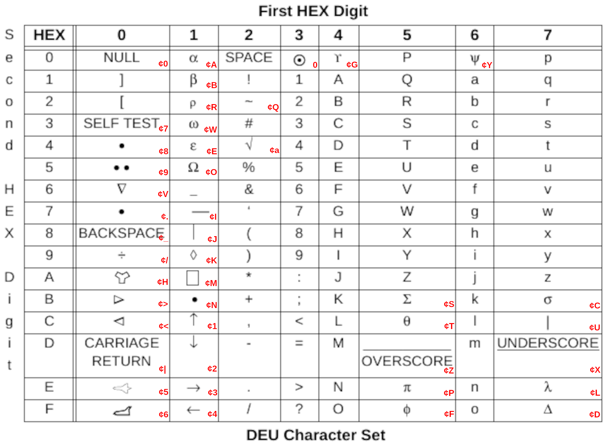

PROGRAM
Compilation UnitsDisclaimer: I shouldn't imply that lnk101 was written by or for Virtual AGC. It was at least begun for Don's own purposes, and thus existed in some form when I first heard mention of it, but Don was kind enough to pay attention to my many ideas on the subject as his development proceeded, so lnk101 is indeed fit for our use within the Virtual AGC suite of Space Shuttle development tools. But note that it does not reside within Virtual AGC software repositories, nor is Virtual AGC in control of it, nor is anything I say about it official. It is in Don's own repository, as is public commentary of his own about its use.Regarding the contemporary linker used for the original Space Shuttle software development, to my knowledge it has not survived, either in source code or otherwise. Thus lnk101 is an entirely-new creation. It is a Python 3 program that should work on any computer having the Python 3 language installed.
I am not aware of surviving documentation describing the format
of AP-101S object files specifically, nor of any surviving AP-101
object-code files from the Shuttle era. In any case, I think
that such object code would have been produced not as "files" in a
mass-storage system, but rather as decks of computer punch-cards
punched directly by the original HAL/S compiler (HAL/S-FC)
or AP-101 assembler. So it is possible that the decks of
punch cards could still exist, hidden away somewhere, even if not
as online files. In any case, I have no access to them, and
have heard nary a hint of their existence, and I could be mistaken
in my inferences about them anyway.
The original linker is referred to in the contemporary
documentation simply as "the AP-101 link editor", and the
contemporary documentation goes on to say that "until the final
version of the linkage editor is available to support all features
of the HAL/S-FC compiler, an interim program, known as HALLINK-FC,
will be supplied to perform the link edit functions". As
usual, satisfactory documentation for neither "the AP-101 link
editor" nor for HALLINK-FC (nor for its System/360-target
predecessor HALLINK) is available to us. Indeed, I
do not even know if the "the AP-101 link editor" was ever
completed satisfactorily to supersede HALLINK-FC. My
intuition, based on nothing concrete, is that it was not, and that
HALLINK-FC was used until the end of the Shuttle
project. But since we have access to neither of those
linkers, any intuition of mine about them is without value.
Aside: It appears to me that in IBM parlance, what I call an "object file" would be a referred to as an "object deck", presumably because it was originally directly punched onto a stack of computer punch-cards. I'm not telling you this just to be pedantic — though obviously, that's a thing I do — but rather to let you know that if you google it yourself, you're likely to have much better luck searching for "decks" instead of "files".
As usual, not all of the System/360 features are needed for
actual legacy AP-101S software, so I won't claim that every
feature provided by a full System/360 linker is necessarily
implemented in lnk101; that's up to Don anyway.
Contrariwise, some non-System/360 AP-101S-specific
features appear in the object files. For example, "records"
in a System/360 object file are described as being of 6 types,
known as ESD, TXT, RLD, SYM, XSD, and END, but the XSD type wasn't
introduced until the 1990's in order to deal with the needs of C
compilers, and hence XSD records don't appear at all in HAL/S or
AP-101S object files. But I won't trouble myself or bore you
with an exhaustive list of such differences here.
Let's get a clarification to my comments above out of the way.
Recall that Space Shuttle flight software came in two distinct
flavors, namely the Primary Flight Software (referred to
as PFS, or loosely but more commonly as PASS) and the Backup
Flight Software (BFS). PFS and BFS were developed
mostly independently of each other — by different companies even,
namely Intermetrics vs Rockwell —, but more than that, their
development tools differed as well. For example, although
PFS and BFS nominally were eventually compiled using the
same HAL/S compiler (HAL/S-FC), in fact there were two
incompatible versions: HAL/S-FC (for PFS) and HAL/S-BFC
(for BFS). And the fact that there are two separate
compilers doesn't affect just PFS and BFS code, but any
HAL/S program we may write: We always have a choice of which
of the two flavors of the compiler to use!
More importantly for us in the context of the present discussion,
back in the day, PFS and BFS used completely different
contemporary linker programs. Outside of this one section
you're reading now, both this entire page and specifically the lnk101
linker program described on this page, are presently for object
code generated by the PASS/PFS flavor the HAL/S compiler.
Object code generated by the BFS version of the compiler won't
even be mentioned outside of this one section you're reading right
now ... well, with one brief return when reverse engineering
is discussed later.
Why? Well, back in the day, rather than using the AP-101
link editor, BFS was linked using a different program called PILOT
(Program Integration and Loading Tool). Furthermore, while
object code produced by the PFS version of HAL/S-FC was in
a modified System/360 format, object code produced by HAL/S-BFC
was instead in PILOT format. The two object-code
formats are incompatible. In other words, neither the AP-101
link editor nor its intended replacement lnk101 are
compatible with PILOT object files. At least, not at
present.
That said, I hope that someday there will be a modern version of
PILOT that can be used to link BFS-style object code ...
perhaps it can be called yaPILOT? Maybe? Yes,
that has a nice ring to it! But better, I'd prefer that lnk101
be extended in that direction.
One hurdle is that as far as I know, there is no surviving
information whatsoever about PILOT, and in
particular we have no documentary information about its
object-file format. To be frank, I'm proud of myself for
even figuring out that it was called PILOT to
begin with. The acronym "PILOT" is, of course, quite
unfortunate from the point of view of trying to find available
information via a search engine like Google, since all you'll
discover is information about how to pilot a Space Shuttle.
I'm afraid this reveals a certain weakness in today's treatment of
knowledge, in that we don't have many knowledgeable people any
longer, but rather we have people with borrowed knowledge attained
via search engines. And A.I., of course, for those of us who
can't even use search engines very effectively. But what
about when the search engines fail because the search terms are
too common? Well, that's a good way to lose knowledge, even
if it's sitting in plain view. But I doubt it would have
helped if PILOT had a less-common name or if we had more
native experts on PILOT to consult, since I doubt that
there's any surviving information about PILOT online
anyway. If you have any such documentation, send it to
me!
But don't lose all hope. Since the object-code generator in
PASS2
of the HAL/S-BFC source code can produce PILOT-compatible
output, it's still possible to attain some understanding
of the PILOT format via reverse engineering it, and indeed
perhaps a sufficient amount to implement a linker! I have
done at least some of the reverse engineering, and have embedded
my findings in a program I call coPILOT.py.
Catchy, eh? This script can read object files created by the
HAL/S-BFC, and parse them into a human readable form.
Moreover, there's additional commentary embedded within coPILOT.py's
source code to document some aspects of the format that aren't
evident in the reports it outputs. If you want to read more
about coPILOT.py, I'd suggest referring to the
discussion in issue #1273 in our Virtual AGC GitHub repository.
And now we leave the topic of BFS in order to resume our discussion of PASS/PFS-style object code and its linker.
I know this works on the versions of Linux I personally
use. Concerning Mac OS or Windows I have no knowledge.
Note: At the present writing, the software in Don's repository is under development, hence the installation process still has what I consider inconveniences that I hope won't persist into a production version. Inconveniences? If you are reading this page at all, it's likely you will already have installed all of the Shuttle-related development tools (HALSFC, ASM101S, XCOM-I) on your own computer. But installing lnk101 using the instructions above will at the moment install duplicates of all of these Virtual AGC development tools, sometimes modified, sometimes behind in features, sometimes ahead in features (which will hopefully be merged back upstream to Virtual AGC sometime soon), all of which will be time-consuming for you, and none of which you will personally use. But as long as none of as any of these duplications work their way into your PATH, having them there doesn't do you any particular harm.
Suppose for the sake of discussion that you have a HAL/S program
residing in a single source-code file, perhaps HELLO_WORLD.hal:
C A TEST PROGAM
HELLO_WORLD: PROGRAM;
WRITE(6) 'Hello, world!';
WRITE(6) '';
CLOSE HELLO_WORLD;
In the simplest manner available right now, you might compile it, link it, and run it as the following table describes:
| Command-Line Instruction |
Explanation |
|---|---|
HALSFC -o HELLO_WORLD.obj HELLO_WORLD.hal |
HALSFC is, of course, our HAL/S
compiler, whose
more-complete usage instructions are found here. |
lnk101 -o HELLO_WORLD.fcm --json-symbols HELLO_WORLD.sym.json -L path/to/ZCON -L path/to/RUN HELLO_WORLD.obj |
If our program had consisted of several
object files that we had compiled separately, rather than
just a single file, then we could have listed all of them on
the command line. The option "--json-symbols
FILENAME.json" tells the linker to
output a symbol table that will be used below by the
emuator(s); without it, the emulator(s) will complain.
The "-L LIBRARY"
options give the names of "libraries" that will be searched
during the linking process when unresolved symbol names for
external procedures or variables are encountered. A
"library" is a directory containing AP-101S object
files. The two libraries you almost-definitely need
for any linking are the RUN library and the ZCON library,
which provide the PASS runtime library and the pointers
(ZCON's, discussed later) for them. Those libraries
are built during the lnk101-installation procedure
discussed earlier, as built from AP-101 assembly-language
source code here
and here,
and reside in the build directories
nsts-sdl-dps/build/runtime/RUN/ and
nsts-sdl-dps/build/runtime/ZCON/ respectively. Typing
that every time you want to link something is not
very convenient, so personally I just copy them (or symlink
to them) in whatever my working directory is, so that I can
just use "-L RUN -L ZCON".
|
gpc run --interactive HELLO_WORLD.fcm |
There are several alternatives, one of which
is this. The program gpc is an AP-101S
emulator and debugger that operates from a command line. It
is available as part of the lnk101
installation. For more information, see the
page dedicated to emulation. |
In this scenario, you have one (or a few) object file(s) that
form part of a program, but you don't have 100% of the files that
comprise a complete program. Or you have them but just want
to focus our attention on a few of them. You could still try
to link such object files using the technique described in the
preceding section, but the code in those files would undoubtedly
reference external symbols. The linker wouldn't know how to
resolve those external references, so there wouldn't be much point
to the exercise of running the linker in the first place.
But wait! Perhaps you could provide the linker with a list
of all the CSECTs it will encounter, and the memory addresses at
which you want those CSECTs to reside. If the linker had
that information, then it could do its job.
How would a need to do this arise? Well, imagine the
following situation. Suppose you have a lot of HAL/S and
AP-101S assembly-language source code files, comprising some
program. In my case, that happens to be the source code for
version OI340600 of the Space Shuttle's PASS. If I were in a
position to compile/assemble every single source-code file in
OI340600 with 100% accuracy, and could figure out such details as
the order in which the object files needed to be linked, then in
principle I could use the preceding section to link that entirety
of OI340600 in a single operation. But even if the HAL/S
compiler and the linker works 100% perfectly, that's still a big
task, and very time-consuming as well — not to mention that at
this writing I've only been able to compile about 2/3 of the HAL/S
source code files, and need to resolve some issues to compile the
rest of them. So as a first step, I'd prefer to see the
development tools do their thing piecemeal rather than in one huge
lump. In other words, I very much want to deal with just one
HAL/S source-code file at a time, and resolve any issues I
encounter in that simplified scenario before moving onward and
upward to combining 1000+ oebject files.
But how would I know where all of the CSECTs were "supposed to"
go in memory? I have an additional thing, a
disassembly of GPC memory contents for OI340600, made during the
Shuttle era by a program called MAFGEN. Such a
disassembly can be parsed to obtain a list of all CSECTs and their
locations in memory, using a utility I've written called unlinkMAFGEN2.py.
Of course, in a project of your own devising, using your own
source-code files, you could produce such a file of
CSECTs/addresses of your own, and we'll come back to the subject
of the format of that file shortly. I face that problem
myself, in that while I have a MAFGEN disassembly of OI340600, I
do not have one for OI301700, which is another PASS version for
which I have source code.
In other words, from the HAL/S source GV7RTL.hal, produce an object file GV7RTL.obj, and then link GV7RTL.obj to produce an AP-101S memory image file GV7RTL.fcm. These operations succeed, but ... so what? Now we've got GV7RTL linked and ready as a memory image, but what can we do with it? We certainly couldn't run it in isolation, without the rest of PASS, even if we happened to know what GV7RTL is supposed to do! (At least I don't, and forgive me for projecting, but I carelessly assume that you don't either.) If this were your own HAL/S project rather than mine, you might just be pleased that it had succeeded at all, and leave it at that.HALSFC APPLSRC/GV7RTL.hal --test --force --parms=LIST,SRN,TEMPLATE,NOLFXI,REGOPT,CARDTYPE=FCRM -o GV7RTL.obj
lnk101 GV7RTL.obj -o GV7RTL.fcm -L RUN -L ZCON --json-symbols GV7RTL.json --external-syms csects-G16.json
Note: There are other subtleties that fcmcmp helps us to deal with as well. In principle, before any programs are loaded into it — i.e., prior to the Initial Program Load (IPL) —, every (halfword) location in AP-101S memory at (halfword) addresses less than 0x20000 is loaded with the default value 0xC9FB, while each location at a higher address is loaded with the default value 0xC6C6. When a program is loaded into the AP-101S memory, by design it's kind of like a swiss cheese, in that not every memory location in every CSECT is necessarily loaded with a specific value: some locations might simply be left open, and whatever value had been preloaded at the location still "shines through" the opening. Then too, the IPL process may involve moving around chunks of memory from one location to another. The net effect is that sometimes an otherwise-uninitialized location in memory may contain a value of 0xC9FB, or it may contain a value of 0xC6C6, or frequently may even have become initialized by the IPL to 0x0000. But fcmcmp sees through this little trick, and so during the comparison process it will match 0x0000 against either of 0xC6C6 or 0xC9FB without treating them as errors.What does such a comparison look like? Well, for GV7RTL, the invocation is like so:
And the results of the comparison? Like so:fcmcmp --csect-table csect-G16.json GV7RTL.json GV7RTL.fcm G16.fcm
And our conclusions? At least for GV7RTL.hal and for flight phase OPS 1 (load G16), the HAL/S compiler, the linker, and the extracted memory dump from the GPC via the MAFGEN disassembly and unlinkMAFGEN2.py, all agree perfectly. The system works! It only remains to check the other ~1500 or so source-code files vs all 8 memory loads, and our confidence for OI340600 will be complete.Note: images differ in size (147478 vs 330394 halfwords)
OK: #QVV6D3 @ 003CA (2 halfwords)
OK: #QMM1DNP @ 004EE (2 halfwords)
OK: #ZGV7RTL @ 00516 (2 halfwords)
OK: #QMV6DN @ 00518 (2 halfwords)
OK: #QVO6DN @ 0051A (2 halfwords)
OK: #DGV7RTL @ 0B4EC (28 halfwords)
OK: VO6DN @ 100F8 (20 halfwords)
OK: MV6DN @ 1010C (24 halfwords)
OK: #CGV7RTL @ 1016A (176 halfwords)
OK: MM1DNP @ 120B6 (18 halfwords)
OK: VV6D3 @ 24006 (16 halfwords)
PASS: all 11 sections match
{
"CSECT1": { ... },
"CSECT2": { ... },
"CSECT3": { ... },
...
}
where CSECT1, CSECT1, and so on,
are the names of the CSECTs. And not just the CSECTs in the
object files you're not supplying, but in the ones you are
supplying the linker as well. As far as the entry for any
given CSECT is concerned, it'll be laid out like this:
{
"start": N1,
"end": N2,
"hal": "NAME",
"type": "TYPE",
"invariant": B,
"contents": {
"SYMBOL1": M1,
"SYMBOL2": M2,
"SYMBOL3": M3,
...
}
}
It's valuable to note that the fields in these objects were
originally determined by whatever information I thought it was
feasible for unlinkMAFGEN2.py to extract from a MAFGEN
disassembly, and not necessarily by the minimum amount of
information I thought would be needed for linking purposes.
In other words, there's extra stuff here that you wouldn't
need for linking, and therefore wouldn't need to add to your own
CSECT/address file. Fields not needed by the linker will be
ignored, and not all of the fields shown here will necessarily be
present or used by the linker. Provide what you can, and
then react to whatever complaints the linker throws at you!
But any symbol that's referenced by your object code will
definitely have to be available within the CSECT/address file or
else lnk101 will fail.
"start"
field is definitely essential. N1
and N2 are
decimal numbers giving the halfword memory addresses at which
the CSECT begins and ends. By "halfword address", I mean
that when the address increases by 1, that refers to a location
2 bytes later in memory. And by "ends" I mean the last
halfword address in the CSECT, not the address
immediately following the CSECT."hal"
field, CSECT names are invariably given as 8-character strings
which may be accurate reflections of names used in
assembly-language source-code files, but are often inadequate
for objects such as PROCEDUREs
or variables defined in HAL/S source-code files. When
available, the "hal"
field lists the full HAL/S name of the object the CSECT
represents.TYPE is one
of "", "BCE", "DATA", "EXCLUSIVE", "HAL_LIBRARY_CODE",
"HAL_LIBRARY_DATA", "HAL_LIBRARY_ZCON", "MSC", "NONHAL",
"PATCH", "PDE", "PROCEDURE", "PROGRAM", "STACK", "ZCON".
Some of these are probably obvious, while some of them are
mysteries to me.B is a
boolean, i.e. having either of the values true or false.
It is unclear to me what it means for a CSECT type to be variant
vs invariant."contents"
field represent the publicly-accessible symbols in the
CSECT. But for example, if the CSECT represented a
PROCEDURE, then variables, labels, or embedded definitions of
PROCEDUREs local to that PROCEDURE wouldn't be provided.
M1, M2, etc., are
decimal-number halfword offsets into the CSECT, beginning at 0
for the start of the CSECT; i.e., they tell us where in the
CSECT the data associated with the symbol can be found.STATISTICS:
PROCEDURE(DATA) ASSIGN(LO_VAL, HI_VAL, MEAN);
DECLARE DATA ARRAY(*) SCALAR;
DECLARE SCALAR,
LO_VAL, HI_VAL, MEAN;
LO_VAL = MIN(DATA);
HI_VAL = MAX(DATA);
MEAN = SUM(DATA) / SIZE(DATA);
CLOSE STATISTICS;
Upon compiling this file with the modern HAL/S compiler (HALSFC),
HALSFC 140-STATISTICS.hal --parms="LIST,VARSYM,DECK,CARDTYPE=YC"
we get not only a code-generation report (pass2.rpt), which in
abridged form looks like the following,
PAGE 2
SYMBOL TYPE ID ADDR LEN(HEX) LEN(DEC) BLOCK NAME
#CSTATIS SD 0001 000000 00001D 29 STATISTICS
#ZSTATIS SD 0002 000000 000002 2
#DSTATIS SD 0003 000000 000002 2
#QEMIN ER 0004
#QEMAX ER 0005
#QESUM ER 0006
------------------------------------------------------------------------------------------------------------------------------------------------------
PAGE 3
LOC CODE EFFAD LABEL INSN OPERANDS SYMBOLIC OPERAND
0000000 ST#1 EQU *
00000 #ZSTATIS CSECT ESDID= 0002
00000 00000E00 DC A'00000E00' STATISTICS
00000 #CSTATIS CSECT ESDID= 0001
0000000 STATISTI EQU * STATISTICS
00000 E9F3 0000 LHI R1,0() TIME: 0.25; #DSTATIS
00002 B914 0005 STH R1,5(R0) TIME: 0.5
00003 E0FB 0018 IAL R0,24() TIME: 0.5
00005 EB01 0000 LA R3,0(R1) TIME: 0.25
00006 BB24 0009 STH R3,9(R0) TIME: 0.5
0000007 ST#2 EQU *
0000007 ST#3 EQU *
0000007 ST#4 EQU *
00007 9A30 000C LH R2,12(R0) TIME: 0.25; DATA
00008 1D1C 000E L R5,14(R0) TIME: 0.25; DATA+2
00009 E4F7 3800 BAL@# R4,0(R1,R3) TIME: 10.0 (SEE POO); #QEMIN
0000B 9B40 0010 LH R3,16(R0) TIME: 0.25; LO_VAL
0000C 3803 0000 STE F0,0(R3) TIME: 0.5
000000D ST#5 EQU *
0000D 9A30 000C LH R2,12(R0) TIME: 0.25; DATA
0000E 1D1C 000E L R5,14(R0) TIME: 0.25; DATA+2
0000F E4F7 3800 BAL@# R4,0(R1,R3) TIME: 10.0 (SEE POO); #QEMAX
00011 9B48 0012 LH R3,18(R0) TIME: 0.25; HI_VAL
00012 3803 0000 STE F0,0(R3) TIME: 0.5
0000013 ST#6 EQU *
00013 9A30 000C LH R2,12(R0) TIME: 0.25; DATA
00014 1D1C 000E L R5,14(R0) TIME: 0.25; DATA+2
00015 E4F7 3800 BAL@# R4,0(R1,R3) TIME: 10.0 (SEE POO); #QESUM
00017 1E1C 000E L R6,14(R0) TIME: 0.25; DATA+2
00018 3AEE CVFL F2,R6 TIME: 1.75
00019 68E2 DER F0,F2 TIME: 7.25
0001A 9B50 0014 LH R3,20(R0) TIME: 0.25; MEAN
0001B 3803 0000 STE F0,0(R3) TIME: 0.5
000001C ST#7 EQU *
000001C LBL#2 EQU *
0001C 97E8 SRET 7,R0 TIME: 17.5
00002 #DSTATIS CSECT ESDID= 0003
00002 000000 ORG *-2
00000 000002 ORG *+2
END
but also an object file (cards.bin). Parsing that object
file using readObject101S.py,
readObject101S.py cards.bin
we obtain something
similar to the following report:
0000: type=SYM ident="I**20001" size=002EWhereas ibmobjdump,
0050: type=SYM ident="I**20002" size=002E
00A0: type=SYM ident="I**20003" size=0022
00F0: type=ESD ident="I**20004" size=0030 esdid=0001
symbol1: name="#CSTATIS" type=SD address=000000 length=003A AMODE24 RMODE24 RW
symbol2: name="#ZSTATIS" type=SD address=000000 length=0004 AMODE24 RMODE24 RW
symbol3: name="#DSTATIS" type=SD address=000000 length=0004 AMODE24 RMODE24 RW
0140: type=ESD ident="I**20005" size=0030 esdid=0004
symbol1: name="#QEMIN " type=ER
symbol2: name="#QEMAX " type=ER
symbol3: name="#QESUM " type=ER
0190: type=TXT ident="I**20006" offset=000000 size=0004 esdid=0002
data: 00 00 0E 00
01E0: type=TXT ident="I**20007" offset=000000 size=0004 esdid=0003
data: 00 00 00 16
0230: type=TXT ident="I**20008" offset=000000 size=0038 esdid=0001
data: E9 F3 00 00 B9 14 E0 FB 00 18 EB 01 BB 24 9A 30
1D 1C E4 F7 38 00 9B 40 38 03 9A 30 1D 1C E4 F7
38 00 9B 48 38 03 9A 30 1D 1C E4 F7 38 00 1E 1C
3A EE 68 E2 9B 50 38 03
0280: type=TXT ident="I**20009" offset=000038 size=0002 esdid=0001
data: 97 E8
02D0: type=RLD ident="I**20010" size=0028
relocation=0003 position=0001 flags=(0,0,A,1,0,0) address=000002
relocation=0004 position=0001 flags=(0,0,A,1,0,0) address=000014
relocation=0005 position=0001 flags=(0,0,A,1,0,0) address=000020
relocation=0006 position=0001 flags=(0,0,A,1,0,0) address=00002C
relocation=0001 position=0002 flags=(0,0,V,1,0,0) address=000000
0320: type=END ident="I**20011" idrType="2"
translator="HAL/SREL3 V0 24331"
processor="RSB-XCOM-I000924239"
--------------------------------------------------------------------------------
SYM-Record Summary:
CONTROL offset=000000 name="#CSTATIS"
DUMMY offset=000000 name="STACK"
DATA offset=000030 name="STACKEND" datatype=H
DUMMY offset=000000 name="HALS/FC"
DUMMY offset=000000 name="HALS/END"
CONTROL offset=000000 name="#CSTATIS"
INSTRUCTION offset=000002 name="D24331"
INSTRUCTION offset=000002 name="T2883796"
CONTROL offset=000000 name="#ZSTATIS"
DATA offset=000000 datatype=Z
CONTROL offset=000000 name="#DSTATIS"
DATA offset=000000 datatype=Z
instead produces the reportibmobjdump -x cards.bin
SYM 46 bytes of packed symbol dataOf course, the documentation needs to be consulted even to understand the parsed information in the report in any detail. Nevertheless, even on a superficial reading, this report tells us that the object file contains 11 "records", of type SYM (3), ESD (2), TXT (4), RLD (1), and END (1), and reveals how various features easily visible in the HAL/S source code are represented in the object file. You may notice that the report doesn't really provide much information about individual SYM (symbol-table) records. That's because all SYM records need to be conjoined end-to-end, and it is only the conjoined record that contains parsable information; whereas the individual SYM records are not separately parsable. Parsing the conjoined record is where the "SYM-Record Summary" at the end of the report comes from.
SYM 46 bytes of packed symbol data
SYM 34 bytes of packed symbol data
ESD [ 1] SD #CSTATIS addr=00000 len=29 hw
ESD [ 2] SD #ZSTATIS addr=00000 len=2 hw
ESD [ 3] SD #DSTATIS addr=00000 len=2 hw
ESD [ 4] ER #QEMIN
ESD [ 5] ER #QEMAX
ESD [ 6] ER #QESUM
TXT [ 2] #ZSTATIS addr=00000 4 bytes
00000: 00 00 0E 00
TXT [ 3] #DSTATIS addr=00000 4 bytes
00000: 00 00 00 16
TXT [ 1] #CSTATIS addr=00000 56 bytes
00000: E9 F3 00 00 B9 14 E0 FB 00 18 EB 01 BB 24 9A 30
00008: 1D 1C E4 F7 38 00 9B 40 38 03 9A 30 1D 1C E4 F7
00010: 38 00 9B 48 38 03 9A 30 1D 1C E4 F7 38 00 1E 1C
00018: 3A EE 68 E2 9B 50 38 03
TXT [ 1] #CSTATIS addr=0001C 2 bytes
0001C: 97 E8
RLD YCON(+) #DSTATIS -> #CSTATIS addr=00001 flags=00
RLD YCON(+) #QEMIN -> #CSTATIS addr=0000A flags=00
RLD YCON(+) #QEMAX -> #CSTATIS addr=00010 flags=00
RLD YCON(+) #QESUM -> #CSTATIS addr=00016 flags=00
RLD ZCON/addr(+) #CSTATIS -> #ZSTATIS addr=00000 flags=10
END
#CSTATIS,
#ZSTATIS, #DSTATIS, #QEMIN,
#QEMAX, and #QESUM. Some of the
details are filled in by the
"Basic HAL/S Programming" course's section "HAL/S CSECTS".
That course explains that each HAL/S "compilation unit" is
automatically assigned a 6-character "generic name" by removing all
underscores and truncating to 6 characters. (It's up to the
programmer to insure that all of the generic names are
unique!) Since in the example we're using the block being
compiled is named STATISTICS, the generic name is just
"STATIS". The compiler then generates names for the various
control sections it likes to create by prefixing various 2-character
strings to the generic name. You can see the hopefully-full
list of prefixes at the hyperlink just given, but the ones relevant
to our particular example are:#C — COMSUB code block, hence #CSTATIS #D — PROGRAM or COMSUB
data, hence #DSTATIS#Z — ZCON CSECT for COMSUB
or REMOTE data, hence #ZSTATIS#QZCON for library
routines, hence #QEMIN, #QEMAX, and
#QESUMAside: ACOMSUBis a HAL/S compilation unit containing data or code (such ourSTATISTICS PROCEDURE) accessible by other compilation units.ZCONcode andREMOTEdata are "far away" in the AP-101S address space from the code accessing them, and hence are accessed by different AP-101S instruction types from "nearby" data or code. The functionsEMIN,EMAX, andESUMare AP-101S assembly-language functions from the HAL/S runtime library.
Alas, the object file is also seen to have a number of items not
directly observable in the original HAL/S code but rather
presumably transparently generated by the HAL/S compiler itself;
examples are the symbols STACK, STACKEND,
HALS/FC, HALS/END, D24324,
and so on.
Some of these items (symbols STACK, STACKEND)
appear in the assembly-language source code for HAL/S
runtime-library files like ACOS,
and thus apparently relate to common features HAL/S uses
internally. Specifically, I believe the report may be
telling us that the DSECT called STACK
is 0x30 (STACKEND) halfwords in length.
Some other non-obvious symbols (Aside: Recall that because of the nature of the HAL/S language, the HAL/S compiler can determine at compile time the maximum stack required by any compilation unit, although the assembler cannot do so for assembly-language files.
D24324, T4041882)
seem by my reckoning to relate to embedded datestamps and
timestamps:DYYDDD — the leading literal "D"
presumably stands for "Date of compilation", while "YY"
is the final 2 digits of the year, and "DDD"
is the day of the year (1 through 365, or 366 for leap years).TNNNNNNN — the leading literal "T"
presumably stands for "Time of compilation", while "NNNNNNN"
is the number of centiseconds since midnight (0 to
8640000). It's TBD as to whether this number is
left-padded to 7 digits. (It's always 7 digits after 3
a.m., but I'm too lazy to get up between midnight and 3 a.m.
just to check the padding.)HALS/FC and HALS/END)
remain to be interpreted. Of course, I can invent
explanations for anything: Perhaps the presence of symbol
HALS/FC is simply the compiler's way of telling us that the
compilation was performed by the HAL/S-FC compiler (as
opposed to the HAL/S-360 compiler). But then, perhaps
not. Really, I haven't a clue! If we're lucky, time will
tell. I suppose that if reverse engineering obsolete
object-file formats were easy, those formats would be included as
free bonus items in boxes of breakfast cereal.Aside: Earlier when I mentioned the topic of reverse engineering the PILOT format used for BFS object files, and in particular the possible assistance offered by the tool coPILOT.py, I threatened to briefly return to the topic of BFS later on. It's now later on! You may find the comparison of the BFS object code to the PFS object code interesting. When 140-STATISTICS is compiled by the BFS compiler rather than the PFS compiler, two object files are produced: cards/#CSTATIS and cards/#ZSTATIS. The assembly language produced is also slightly different, but only in that an extra instruction "SVC 0()" is inserted at the very end, so I won't bore you with yet another printout of the generated assembly language. The following is how coPILOT.py parses the two object files. I don't think that a symbol table for local symbols is included in the object files, even when the compiler'sVARSYMoption is selected. Another thing to note is that coPILOT.py reports all addresses and sizes or lengths using halfword addressing, whereas readObject101S.py does so by byte addressing. Thus addresses and sizes or lengths reported by coPILOT.py are roughly half of the corresponding ones reported by readObject101S.py. Oh well, a different day (or year! (or decade!)), a different design choice!
Member cards/#CSTATIS
0000: Start
origin=0000
0004: CSD (CSECT Definition)
esdid=1 #CSTATIS length=001F stacksize=0018 flags=800A HAL=STATISTICS
001E: CSD (CSECT Definition)
esdid=2 #DSTATIS length=0002 stacksize=0000 flags=4000
002E: EXR (External Reference Definition)
esdid=3 #QEMIN version=0003 tbd=8000
003C: EXR (External Reference Definition)
esdid=4 #QEMAX version=0003 tbd=8000
004A: EXR (External Reference Definition)
esdid=5 #QESUM version=0003 tbd=8000
0058: PTX (Protected text)
offset=0000 csect=2 #DSTATIS
0000
0060: PTX (Protected text)
offset=0000 csect=1 #CSTATIS
E9F3 0000 B914 E0FB 0018 EB01 BB24
0074: PTX (Protected text)
offset=0007 csect=1 #CSTATIS
9A30 1D1C E4F7 3800 9B40 3803 9A30 1D1C E4F7 3800 9B48 3803 9A30 1D1C E4F7 3800
1E1C 3AEE 68E2 9B50 3803 C9FB 0000 97E8
00AA: RLD (Relocation data)
rel.id=2 #DSTATIS pos.id=1 #CSTATIS flags=0010 address=0001
rel.id=3 #QEMIN pos.id=1 #CSTATIS flags=0020 address=000A
rel.id=4 #QEMAX pos.id=1 #CSTATIS flags=0020 address=0010
rel.id=5 #QESUM pos.id=1 #CSTATIS flags=0020 address=0016
00CC: END
cards=10
hal compiler="HAL/S BFC-"
hal version=1700
timestamp=2026-02-16 06:53:10
xpl compiler="RSB-XCOM-I"
xpl version=0.90
Member cards/#ZSTATIS
0000: Start
origin=0000
0004: EXR (External Reference Definition)
esdid=6 #CSTATIS version=0000 tbd=800A HAL=STATISTICS
001C: CSD (CSECT Definition)
esdid=7 #ZSTATIS length=0002 stacksize=0001 flags=400A HAL=STATISTICS
0036: PTX (Protected text)
offset=0000 csect=2 #DSTATIS
0000 0E00
0040: RLD (Relocation data)
rel.id=1 #CSTATIS pos.id=2 #DSTATIS flags=002C address=0000
004A: END
cards=5
hal compiler="HAL/S BFC-"
hal version=1700
timestamp=2026-02-16 06:53:10
xpl compiler="RSB-XCOM-I"
xpl version=0.90
Here are some things I find that differ between AP-101 object
files and System/360 object files, or at least which are
unexpected from reading the System/360 documentation. Some
of these things you'll already have seen above (but without
explanation) in the reports produced by reverse-engineering
software developed partially using the inferences drawn
below. But reverse engineering is a messy, iterative
process, so it's seldom easy to give a clean end-to-end narrative.
The expected: In System/360 assembly language, code and
data are partitioned into a series of named "control sections",
generically referred to as CSECTs. It should be the case
that from the assembler's point of view, "addresses" begin at 0
and increment upward in each section, and that the linker program
subsequently reassigns different starting addresses to the
sections generated by the assembler, while adjusting all of the
addresses referenced within the various sections accordingly.
18 SQRT AMAIN INTSIC=YES 00001300
19+***********************************************************************
20+*
21+* PRIMARY ENTRY POINT
22+*
23+***********************************************************************
00000 24+SQRT CSECT 01-AMAIN
26 * COMPUTES SQUARE ROOT IN SINGLE PRECISION 00001400
27 INPUT F0 SCALAR SP 00001500
0000000 28+F0 EQU 0 01-INPUT
30 OUTPUT F0 SCALAR SP 00001600
32 WORK R1,R5,R6,R7,F1,F2,F3 00001700
0000001 33+R1 EQU 1 01-WORK
0000005 34+R5 EQU 5 01-WORK
0000006 35+R6 EQU 6 01-WORK
0000007 36+R7 EQU 7 01-WORK
0000001 37+F1 EQU 1 01-WORK
0000002 38+F2 EQU 2 01-WORK
0000003 39+F3 EQU 3 01-WORK
00000 E9F3 0032 0032 41 LA R1,A 00001800
0000032 42 USING A,R1 00001900
00002 7AE0 43 START LER F2,F0 00002000
00003 DE88 0026 0022 44 BNP ERROR ARGUMENT NEGATIVE OR ZERO 00002100
45 * 00002200
00004 27E8 46 LFXR R7,F0 TRANSFER TO GENERAL REGISTER 00002300
00005 76E6 47 XR R6,R6 00002400
00006 FE1C 0007 48 SLDL R6,7 Q & MANTISSA IN R7 00002500
00007 F660 0018 49 SLL R6,24 CHAR OF ANSWER - (Q+32) IN R6 00002600
00008 1FE7 50 LR R7,R7 CHECK FOR Q=1 00002700
00009 DD0C 000D 0003 51 BCF 5,GORP 00002800
52 * 00002900
0000A B0E6 0100 0100 53 AHI R6,X'0100' ADD 1 TO CHAR FOR Q=1 00003000
0000C E909 0002 54 LA R1,2(R1) FULLWORD INDEX 00003100
55 * 00003200
0000D 1DE6 56 GORP LR R5,R6 CHARACTERISTIC OF ANSWER IN R5 00003300
0000E F705 0001 57 SRA R7,1 FIXED M/2 + 'QQ' IN TOP BITS 00003400
0000F 0711 003A 58 A R7,C ADD C/2, AND ELIMINATE 'QQ' 00003500
00010 1E09 0036 59 L R6,B -B/2 OR -B/8 AT BIT 7(MANTISSA POS.) 00003600
00011 4EE7 60 DR R6,R7 (R6) = (4**(-Q))(-B/(C+M)) AT BIT 7 00003700
00012 0601 0032 61 A R6,A A OR A/4 AT BIT 7 + CHAR=32 00003800
00013 06E5 62 AR R6,R5 RESTORE CHARACTERISTIC OF ANSWER 00003900
00014 29EE 63 LFLR F1,R6 00004000
64 * 00004100
65 DROP R1 00004200
66 * 00004300
67 * TWO PASSES OF THE NEWTON-RAPHSON ITERATION 00004400
68 * 00004500
00015 68E1 69 DER F0,F1 00004600
00016 50E1 70 AER F0,F1 00004700
00017 7BF7 0013 002C 0013 71 LE F3,FHALF 00004800
00019 60E3 72 MER F0,F3 00004900
0001A 6AE0 73 DER F2,F0 00005000
74 * 00005100
0001B B6E6 FF00 FF00 75 NHI R6,X'FF00' PUT CHARACTERISTIC OF 00005200
0001D 06F7 000F 002E 000F 76 A R6,ROUND ANSWER IN ROUND 00005300
0001F 29EE 77 LFLR F1,R6 DIGIT, AND ADD 00005400
00020 50E1 78 AER F0,F1 TO INTERMEDIATE RESULT 00005500
79 * 00005600
00021 58E2 80 SER F0,F2 00005700
00022 60E3 81 MER F0,F3 00005800
SQRT -- SINGLE PRECISION SQUARE ROOT FUNCTION PAGE 3
LOC OBJECT CODE ADR1 ADR2 SOURCE STATEMENT AP101S 3.0 09.39 07/22/05
00023 50E2 82 AER F0,F2 ANSWER IN F0 00005900
83 * 00006000
84 EXIT AEXIT AND RETURN 00006100
85+*********RETURN TO CALLER**********************************************
00024 86+EXIT DS 0H 01-AEXIT
00024 9914 0005 87+ LH 1,5(0) RESTORE PROGRAM DATA BASE 01-AEXIT
00025 C7EC 88+$RET1 BCRE 7,4 RETURN TO CALLER 01-AEXIT
89+***********************************************************************
91 * 00006200
00026 DC0E 0024 0003 92 ERROR BCB 4,EXIT EXIT IF ARG=0 00006300
93 AERROR 5 ARGUMENT<0 00006400
94+*********ISSUE SEND ERROR SVC******************************************
00027 C9FB 0030 0030 95+ SVC AERROR1 ISSUE SEND ERROR SVC 01-AERRO
96+*********SEND ERROR SVC RETURNS CONTROL FOR STANDARD FIXUP*************
00029 78E8 97 LECR F0,F0 FIXUP: GET |ARG| 00006500
0002A DFA6 0002 0029 98 B START AND TRY AGAIN 00006600
99 * 00006700
0002B C9FB
0002C 40800000 100 FHALF DC E'0.5' 00006800
0002E 00000001 101 ROUND DC X'00000001' 00006900
102 * 00007000
103 ADATA 00007100
104+*********DATA CSECT****************************************************
00030 105+ LTORG 02-ERRPA
106+****************ERROR PARAMETER AREA***********************************
00030 107+#LSQRT CSECT 02-ERRPA
108+*** SQRT SENDS THE FOLLOWING ERROR 02-ERRPA
110+*** ERROR NUMBER 5 IN GROUP 4 02-ERRPA
00030 0014 112+AERROR1 DC H'20' SVC CODE FOR SEND ERROR 02-ERRPA
00031 0405 113+ DC Y(4*256+5) 8 BIT GROUP AND NUMBER 02-ERRPA
114+****************END OF ERROR PARAMETER AREA****************************
00032 115+#LSQRT CSECT 01-ADATA
00032 21AE7D00 116 A DC X'21AE7D00' 1.6815948=A + X'20' 00007200
00034 206B9F40 117 DC X'206B9F40' 0.4203987=A/4 + X'20' 00007300
00036 FF5B02F1 118 B DC X'FF5B02F1' -1.2889728=B 00007400
00038 FFD6C0BD 119 DC X'FFD6C0BD' -0.3222432=B/4 00007500
0003A 35CFC610 120 C DC X'35CFC610' 0.8408065=C/2 00007600
0003C 75CFC610 121 DC X'75CFC610' 0.8408065=C/2 + X'40' 00007700
122 ACLOSE 00007800
123+ END 01-ACLOS
As I've highlighted in red, there
are two CSECTs in this excerpt, and they are called "SQRT" and "#LSQRT". (The #LSQRT section has two separate
CSECT statements, but
don't be distracted by that, as it's not significant in respect to
the points I want to make. Also, don't be distracted by the
lines I've highlighted in green,
which I'll discuss in a moment.)
Unlike the expectation we (or at least I) would have, The
#LSQRT section's
addresses do not restart at 0, and instead the assembler
continues to assign it addresses which continue incremented from
the end of the SQRT
section. It is as if the assembler has already performed the
step of partially linking these two sections of the code.
Why is this?
One might argue that while whoever coded the original assembler
thought (for some unknown reason) that it was a good idea to
present the assembly report in this fashion, it really doesn't
make any difference: As long as the object file produced by
the assembler still represents these as independent sections, the
linker can still reassign the addresses however it likes, with the
result that after the final linking it may no longer be the case
that the #LSQRT section
immediately follows the SQRT
section in memory.
Alas, that rationalization is incorrect. Consider now the
lines highlighted in green, and in
particular this instruction:
LA R1,A
For the assembler to assemble an instruction like this, in which
a "base register" is not explicitly stated as an operand itself,
it needs to somehow determine for itself the appropriate base
register. There are only two ways this can happen:
A in
this case) is in that same code section as the instruction
itself, in which case the appropriate base register is general
register 3.USING
pseudo-op. The USING
pseudo-op informs the assembler as to what assumption it can
make about the contents of the various general registers.In this example, though, neither of these conditions
obtains. As for condition #1, the instruction appears in the
SQRT code section, but
its operand (A) appears
in a different section, namely #LSQRT.
As for condition #2, the only USING
pseudo-op follows the instruction rather than precedes it, so
there is no way for the assembler to make any assumptions about
register contents.
How, then, has the assembler been able to assemble this LA instruction? Well,
perhaps there are possibilities that haven't occurred to me, but
it appears to me that there's only one explanation: The
assembler really has already linked the SQRT and #LSQRT
code sections, so that they are in a fixed relationship to each
other, and in particular there is really no separate #LSQRT section as such in
the object file output by the assembler. I.e., #LSQRT has become just a
label for an address within the SQRT
section, and the actual linker program cannot change this
at any later time.
To understand the comments below, it may help to refer back to the
earlier example of a reverse-engineering report.
In so-called SYM records within an object file, each symbol
representing "data" has an associated "datatype", consisting of a
single-byte number. For example, the datatype 0x00
represents character data (C), 0x04 represents hexadecimal data
(X), 0x18 represents single-precision floating-point (E), and so
on. However, there's one datatype in AP-101S object files,
0x84, that doesn't appear in the available system/360 object-file
documentation, leading us to speculate that it represents some
AP-101S-only datatype not available on System/360.
As it happens, there's discussion on our page about the
modern AP-101 assembler that concerns the available datatypes.
That discussion points out a single AP-101S-specific datatype, Z,
that's speculated to be unrelated to the System/360
datatype also designated as Z ("zoned decimal", 0x34). For
AP-101S, it was speculated that the Z datatype instead was
something called a ZCON, which as kind of long-range address
constant for items not present in nearby memory and hence
addressable by only a restricted class of instructions.
We are thus tempted to equate datatype 0x84 in SYM records with
AP-101S ZCONs. At the moment this is pure speculation that
perhaps doesn't fit perfectly, but the reverse-engineering report
nevertheless treats it as factual and reacts to these datatypes as
follows:
In System/360 object files, all character data is encoded in
EBCDIC. This is not true for AP-101 object files. Some
text is encoded instead in the character set of the Space
Shuttle's Display Electronics Unit (DEU).

Reverse engineering reveals at least some of the cases in which DEU encoding is used in place of EBCDIC in the object files:| Classification of Textual Data |
Encoding |
|---|---|
Textual data used only at
compile/assembly/link time, but not accessible to the
executable AP-101 program itself at runtime. Examples
of this kind of data include (but are not limited to):
|
EBCDIC |
Character constants appearing in HAL/S
source code, such as DECLARE CHARACTER CONSTANT
statements, DECLARE CHARACTER INITIAL
constants, or character literals. |
DEU |
Character data appearing in AP-101
assembly-language source code, such as DC
pseudo-ops or so-called "literals" like "=C'...'". |
TBD (currently, assumed
EBCDIC) |
In comparison, here's an excerpt from the reverse-engineering report on the object-code file, with just some of the TXT records, and some portions of the TXT records that seemingly correspond to the literal strings highlighted in colors matching the HAL/S listing above:ROOTS: PROGRAM;
DECLARE SCALAR, A, B, C, D, ROOT1, ROOT2;
DO WHILE TRUE;
WRITE(6) ;
WRITE(6) 'Enter A, B, C (0,0,0 to quit):';
READ(5) A, B, C;
IF A = 0 AND B = 0 AND C = 0 THEN
DO;
WRITE(6) 'Quitting ...';
EXIT;
END;
D = B**2 - 4 A C;
IF D >= 0 THEN
DO;
D = D**0.5;
ROOT1 = (-B + D) / (2 A);
ROOT2 = (-B - D) / (2 A);
WRITE(6) 'Real roots of', A, 'X**2 +', B, 'X +', C,
'are:', ROOT1, ROOT2;
WRITE(6) 'Check:',
A ROOT1**2 + B ROOT1 + C,
A ROOT2**2 + B ROOT2 + C;
END;
ELSE
DO;
TEMPORARY RE, IM, RE2, IM2;
D = (-D)**0.5;
RE = -B / (2 A);
IM = D / (2 A);
WRITE(6) 'Complex roots of', A, 'X**2 +', B, 'X +',
C, 'are:', RE, '+/-', IM, 'i';
RE2 = RE**2 - IM**2; /* Square of RE2 +/- IM2 i. */
IM2 = 2 RE IM;
WRITE(6) 'Check:', A RE2 + B RE + C, '+/-',
A IM2 + B IM, 'i';
END;
END;
CLOSE ROOTS;
.You can verify for yourself, if you like, that the colored portions are encoded as DEU/ASCII, and hopefully take my word for it (since I wrote it!) that the reverse-engineering report generator uses EBCDIC-to-ASCII conversion to print out messages such as
.
.
05A0: type=TXT ident="I**20019" offset=000024 size=0038 esdid=0003
data: 00 01 69 00 00 03 2B 2F 2D 00 00 10 43 6F 6D 70
6C 65 78 20 72 6F 6F 74 73 20 6F 66 00 06 43 68
65 63 6B 3A 00 04 61 72 65 3A 00 03 58 20 2B 00
00 06 58 2A 2A 32 20 2B
05F0: type=TXT ident="I**20020" offset=00005C size=0036 esdid=0003
data: 00 0D 52 65 61 6C 20 72 6F 6F 74 73 20 6F 66 00
00 0C 51 75 69 74 74 69 6E 67 20 2E 2E 2E 00 1E
45 6E 74 65 72 20 41 2C 20 42 2C 20 43 20 28 30
2C 30 2C 30 20 74
0640: type=TXT ident="I**20021" offset=000092 size=0008 esdid=0003
data: 6F 20 71 75 69 74 29 3A
.
.
.
ident="I**20021".Aside: There's no easy way, as far as I know, using just information within the object decks themselves, to easily locate individual unnamed string literals within the TXT records of the object decks. The way I did it above, was to assume that ASCII coding was used, and to look for the ASCII strings ... which I admit was a bit of a cheat, even though it doesn't invalidate the conclusions in any way. In the next section, we'll learn enough to infer that the these strings should have been found in aCSECTcalled#DROOTS. And in portions of the reverse-engineering report that I've omitted above, we would have seen that there is in fact aCSECTcalled#DROOTSand that it is assigned the ESDID 0003, which is the case in the excerpt above. So indeed, everything is as it should be in this the best of all possible worlds.
PROGRAM
(i.e., the top-level compilation unit of a program, rather than a
mere component of a program such as the PROCEDURE)
have object files differing from the format described in the
System/360 documentation and roughly covered in examples of reverse
engineering above.Such an object file begins with a block of records in the
almost-System/360 format we've already described, but differs
after an END record is encountered. After an END
record, we enter undocumented terra incognita, in which we
can only rely upon whatever reverse engineering we can apply.
Consider this
sample HAL/S source code for a PROGRAM based
on one found in the book Programming in HAL/S:
SIMPLE: PROGRAM;
DECLARE PI CONSTANT (3.14159266);
DECLARE R SCALAR;
WRITE(6) 'Input R to compute PI R**2, or -1 to quit.';
DO WHILE TRUE;
READ(5) R;
IF R < 0 THEN EXIT;
WRITE(6) 'R =', R, 'and PI R**2 =', PI R**2;
END;
CLOSE SIMPLE;
After compiling this file and parsing the object file, we find
extraneous material following the END record. If we pretend
that this extraneous material consists of EBCDIC characters —
which is only partially true —, it could be translated into ASCII
essentially as follows:
" STACK $0SIMPLE "
"cSYM a aaaSTART I**20018"
"cESD a abSTART aaaa aa $0SIMPLEcaaa I**20019"
"cTXT aaa a abU3aa I**20020"
"cRLD a acabaaac I**20021"
"cEND aaa ab 2HAL/SREL3 V0 24329RSB-XCOM-I000924239 I**20022"
Aside: Strictly speaking, this isn't an ASCII translation of the extraneous data, because it has a few flourishes of my own to make it more readable. Specifically, the enclosing quotes are mine, the non-printable control characters encoded numerically as 0x00 (NUL), 0x01 (SOH), and 0x02 (STX) are represented by the lower-case characters "a", "b", and "c", respectively, and there aren't actually any newlines. But we can get the gist of it!
We need to digress for a moment before trying to make some sense
of this extraneous nonsense. In the earlier discussion of
the object-file format, I glossed over certain simple facts that I
assumed you could glean from the System/360 documentation if you
were actually interested. But those facts become relevant to
the discussion now, so let state them:
So superficially at least, the extraneous material at the end of
the object file starts with an aberrant record that does not begin
with 0x02. But after that aberrant record, the remaining
extraneous material seems to follow the rules as if they comprised
a completely separate object file.
Taking all of that into account, here's the kind of
reverse-engineering report we actually see. The extraneous
material is highlighted in green, and I've invented a new record
type (HDR, for "header") for what I've so far been calling the
"aberrant" record:
0000: type=SYM ident="I**20001" size=002E
0050: type=SYM ident="I**20002" size=002E
00A0: type=SYM ident="I**20003" size=0029
00F0: type=ESD ident="I**20004" size=0030 esdid=0001
symbol1: name="$0SIMPLE" type=SD address=000000 length=0060 AMODE24 RMODE24 RW
symbol2: name="#ESIMPLE" type=SD address=000000 length=000C AMODE24 RMODE24 RW
symbol3: name="#DSIMPLE" type=SD address=000000 length=0052 AMODE24 RMODE24 RW
0140: type=ESD ident="I**20005" size=0030 esdid=0004
symbol1: name="@0SIMPLE" type=ER
symbol2: name="#QIOINIT" type=ER
symbol3: name="#QCOUT " type=ER
0190: type=ESD ident="I**20006" size=0020 esdid=0007
symbol1: name="#QEIN " type=ER
symbol2: name="#QEOUT " type=ER
01E0: type=TXT ident="I**20007" offset=000000 size=000C esdid=0002
data: 00 00 00 00 00 00 07 00 00 00 00 05
0230: type=TXT ident="I**20008" offset=000008 size=0004 esdid=0003
data: 00 01 00 12
0280: type=TXT ident="I**20009" offset=000000 size=0038 esdid=0001
data: E8 F3 00 00 E9 F3 00 00 B9 14 E0 FB 00 14 EB 11
BB 24 BE E8 BD E5 D0 FF 38 00 EA 4D D0 FF 38 00
BE E7 75 E5 D0 FF 38 00 EA 0B D0 FF 38 00 78 07
DD 04 DF 50 BE E8 BD E5
02D0: type=TXT ident="I**20010" offset=000038 size=0028 esdid=0001
data: D0 FF 38 00 EA 41 D0 FF 38 00 78 07 D0 FF 38 00
EA 21 D0 FF 38 00 7F 07 67 E7 67 05 78 E7 D0 FF
38 00 DF 7A C9 F9 00 00
0320: type=TXT ident="I**20011" offset=000000 size=0002 esdid=0003
data: 00 15
0370: type=TXT ident="I**20012" offset=000004 size=0004 esdid=0003
data: 41 32 43 F6
03C0: type=TXT ident="I**20013" offset=000010 size=0036 esdid=0003
data: 00 0D 61 6E 64 20 50 49 20 52 2A 2A 32 20 3D 00
00 03 52 20 3D 00 00 2A 49 6E 70 75 74 20 52 20
74 6F 20 63 6F 6D 70 75 74 65 20 50 49 20 52 2A
2A 32 2C 20 6F 72
0410: type=TXT ident="I**20014" offset=000046 size=000C esdid=0003
data: 20 2D 31 20 74 6F 20 71 75 69 74 2E
0460: type=RLD ident="I**20015" size=0038
relocation=0004 position=0001 flags=(0,0,A,1,0,0) address=000002
relocation=0003 position=0001 flags=(0,0,A,1,0,0) address=000006
relocation=0005 position=0001 flags=(0,0,A,1,0,0) address=000018
relocation=0006 position=0001 flags=(0,0,A,1,0,0) address=00001E
relocation=0005 position=0001 flags=(0,0,A,1,0,0) address=000026
relocation=0007 position=0001 flags=(0,0,A,1,0,0) address=00002C
relocation=0005 position=0001 flags=(0,0,A,1,0,0) address=00003A
04B0: type=RLD ident="I**20016" size=0030
relocation=0006 position=0001 flags=(0,0,A,1,0,0) address=000040
relocation=0008 position=0001 flags=(0,0,A,1,0,0) address=000046
relocation=0006 position=0001 flags=(0,0,A,1,0,0) address=00004C
relocation=0008 position=0001 flags=(0,0,A,1,0,0) address=000058
relocation=0001 position=0002 flags=(0,0,V,1,0,0) address=000004
relocation=0003 position=0002 flags=(0,1,A,1,0,0) address=000004
0500: type=END ident="I**20017" idrType="2"
translator="HAL/SREL3 V0 24331"
processor="RSB-XCOM-I000924239"
0550: type=HDR ident=" " length=15
text=" STACK $0SIMPLE"
055F: type=SYM ident="I**20018" size=0009
05AF: type=ESD ident="I**20019" size=0020 esdid=0001
symbol1: name="START " type=SD address=000000 length=0004 AMODE24 RMODE24 RW
symbol2: name="$0SIMPLE" type=ER
05FF: type=TXT ident="I**20020" offset=000000 size=0004 esdid=0001
data: E4 F3 00 00
064F: type=RLD ident="I**20021" size=0008
relocation=0002 position=0001 flags=(0,0,A,1,0,0) address=000002
069F: type=END ident="I**20022" entryAddress=000000 esdid=0001 idrType="2"
translator="HAL/SREL3 V0 24331"
processor="RSB-XCOM-I000924239"
--------------------------------------------------------------------------------
SYM-Record Summary:
CONTROL offset=000000 name="$0SIMPLE"
DUMMY offset=000000 name="STACK"
DATA offset=000028 name="STACKEND" datatype=H
DUMMY offset=000000 name="HALS/FC"
DUMMY offset=000000 name="HALS/END"
CONTROL offset=000000 name="$0SIMPLE"
INSTRUCTION offset=000002 name="D24331"
INSTRUCTION offset=000002 name="T2904859"
CONTROL offset=000000 name="#ESIMPLE"
DATA offset=000000 datatype=Z
CONTROL offset=000000 name="#DSIMPLE"
DATA offset=000000 datatype=Z
DATA offset=00000C name="R" datatype=E
CONTROL offset=000000 name="START"